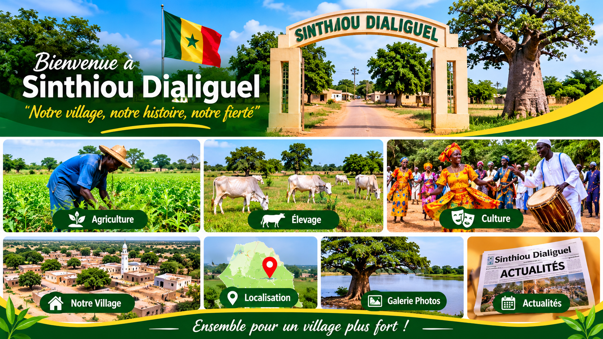
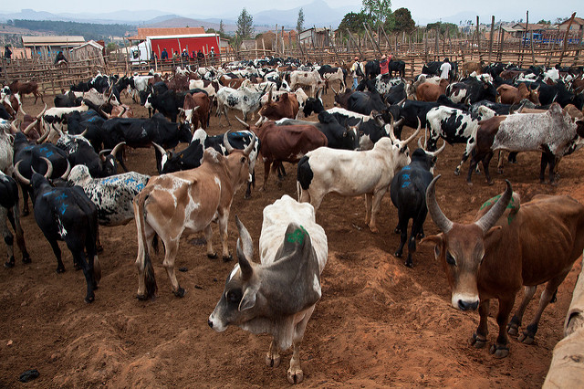
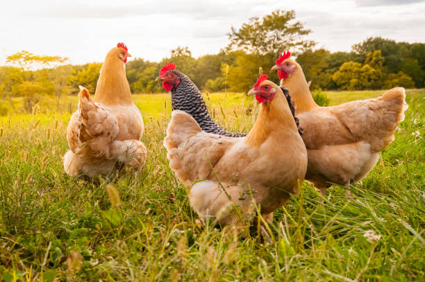

Découvrez Sinthiou Dialiguel
Un village riche en culture, en traditions et en solidarité.

Notre village, notre histoire, notre fierté
Un village riche en culture, en traditions et en solidarité.
Découvrez l'histoire, les traditions et le patrimoine
de notre beau village Sinthiou Dialiguel.
Sinthiou Dialiguel est un village riche en traditions,
en culture et en solidarité. Ses habitants sont attachés à leurs valeurs, à l'agriculture, à l'élevage et à l'entraide. Malgré l'évolution du temps, le village préserve son identité et son patrimoine.
Sinthiou Dialiguel : notre village, notre fierté !

Les activités agricoles de notre village.

La place de l'élevage dans notre communauté.

Nos traditions et nos événements culturels.

Bienvenue à toutes les personnes qui souhaitent découvrir notre village.

Découvrez les activités agricoles de notre village.

Découvrez l'élevage et les animaux de notre communauté.